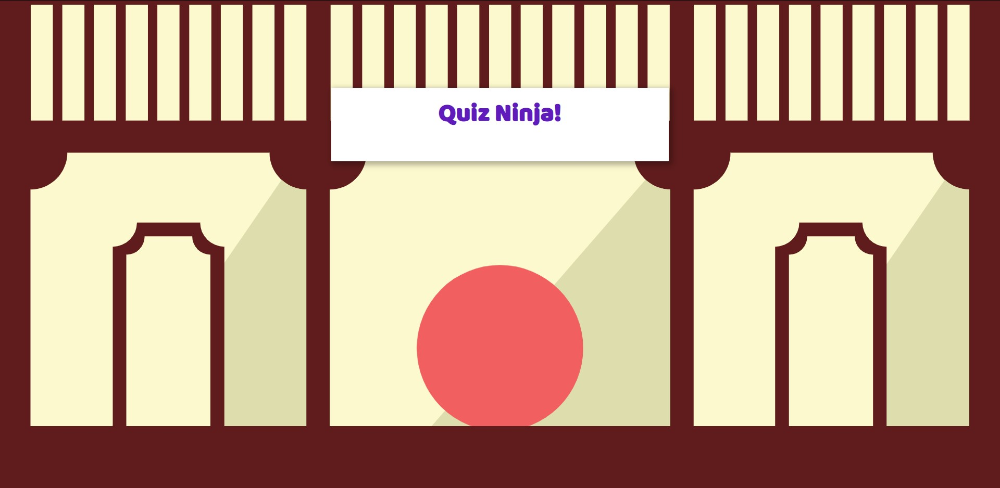

JavaScript Quiz Ninja Exercises
Additional Exercises
Description of this Week's Assignments
- "Throughout this book we will be building an example application
called 'Quiz Ninja'. This is a quiz application where the aim is
for the player to answer questions about the real names of super
heroes. The quiz application will run in the browser and use many
of the concepts covered in the book. At the end of each chapter
we’ll use the skills we have covered in that chapter to develop
the application further"
(JavaScript: Novice to Ninja, Chapter 1).
- Read Ch2: Programming basics. Much of this should be review,
but pay special attention to the sections on variables, scope,
converting/parsing, and template literals.
- Read all of Ch3: Arrays, Logic, and Loops. Again much of this
should feel like review. Pay special attention to the section
on array methods.
- Read all of Ch4: Functions. Note that there are multiple ways
to declare a function in Javascript. Pay close attention to
the concept of callbacks as well.
Highlight Photos from the Week
